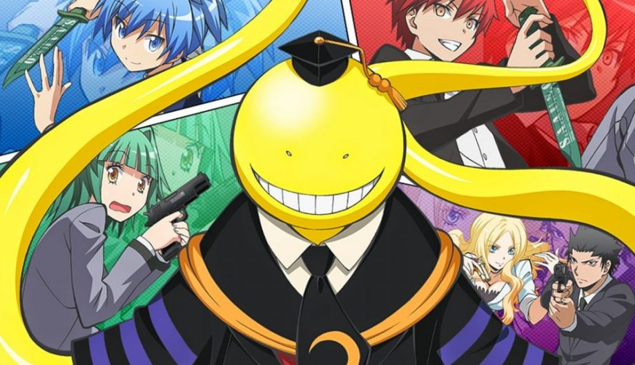

Assassination Classrom
Descrição
- Gênero: Ação, Comedia, Drama, Ficção cientifica
- Faixa etária: 14
- Temporadas: 2
- Episódios: 47
- Autor: Yūsei Matsui
- Direção: Seiji Kishi
- Roteiristas: Makoto Uezu
- Estúdio de animação: Lerche
- Distribuidora: Fuji Creative Corporation
- Emissora: Fuji Television
- Streaming: Crunchyroll